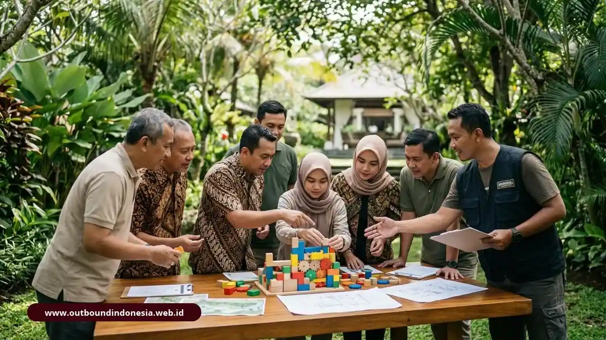

Program hybrid outbound dan team building 2D1N mengatasi silo mentality dengan menggabungkan permainan pencair suasana, simulasi pemecahan masalah ber-debriefing intensif, dan sesi refleksi malam, lalu menutupnya dengan aktivitas petualangan yang membangun keberanian dan soliditas tim lintas divisi secara berkelanjutan.
Fondasi Konseptual: Pahami perbedaan komparatif antara outbound murni, team building terstruktur, dan rekreasi gathering di artikel pilar: Perbedaan Outbound dan Team Building: Ulasan Lengkap dan Contoh Kasus.
Mengapa Silo Mentality Berbahaya bagi Pertumbuhan Perusahaan?
Silo mentality (mentalitas ego sektoral) adalah fenomena di mana masing-masing departemen atau divisi hanya memprioritaskan target dan kenyamanan unit kerjanya sendiri, seraya memperlakukan divisi lain sebagai "pihak luar" yang bersaing atau merepotkan.
Gejala silo mentality sangat nyata dalam rutinitas kerja kantor: antarbagian saling tunggu konfirmasi surel, koordinasi proyek terhambat karena birokrasi berbelit, masukan dari departemen lain dianggap sebagai campur tangan, dan isu keterlambatan selalu dilemparkan kepada divisi hilir. Akibatnya, tujuan strategis perusahaan tertunda dan biaya inefisiensi membengkak drastis.
Kerugian finansial akibat silo mentality bukanlah asumsi kosong. Riset tempat kerja Gallup mencatat bahwa perusahaan dengan tim yang memiliki tingkat kolaborasi dan komunikasi yang harmonis mencapai produktivitas sekitar 21 persen lebih tinggi dan angka absensi 41 persen lebih rendah dibandingkan tempat kerja yang terbelit konflik antardepartemen.
Mengapa Rapat Koordinasi Biasa Sering Gagal Mencairkan Kebekuan?
Ketika konflik antardepartemen meruncing, manajemen sering kali mencoba menyelesaikannya lewat rapat koordinasi tambahan di ruang konferensi. Sayangnya, intervensi ini kerap menemui jalan buntu.
Di ruang rapat formal, peserta masih membawa status jabatan, hierarki struktural, dan mekanisme pertahanan diri masing-masing. Diskusi yang terjadi cenderung sebatas laporan prosedural yang bersifat normatif. Karyawan yang pasif akan tetap diam, sedangkan figur yang dominan akan tetap mendikte pembicaraan.
Silo terbentuk dari hubungan interpersonal yang kaku dan prasangka emosional yang tidak terucap, bukan semata kekurangan data operasional. Oleh karena itu, organisasi membutuhkan arena baru di luar rutinitas kantor di mana atribut senioritas dan sekat divisi dilepaskan secara sukarela melalui pengalaman bersama (shared experiential challenge).
Apa Itu Program Hybrid 2 Hari 1 Malam (2D1N)?
Program hybrid 2D1N adalah desain intervensi pelatihan 2 hari 1 malam yang mengintegrasikan secara berimbang tiga dimensi: keseruan outbound fun games di alam bebas, ketajaman analisis strategic team building dengan debriefing psikologis, serta kehangatan gala dinner refleksi.
Setiap lapisan modul memiliki tujuan spesifik yang saling memperkuat:
- Fun Games Pagi: Bertindak sebagai de-freezing agent untuk merontokkan kecanggungan dan jarak struktural antarpejabat dan staf junior.
- Strategic Problem Solving Siang: Menguji pola komunikasi asli tim saat menghadapi skenario krisis bertekanan bertahap.
- Gala Dinner & Refleksi Malam: Menggugah rasa aman psikologis (psychological safety) dan menautkan kedekatan emosional di suasana akrab.
- Aktivitas Petualangan (Rafting/Offroad) Pagi Hari ke-2: Menjadi puncak perayaan (celebration) yang memompa dopamin dan rasa bangga bersama sebagai satu kesatuan utuh.
Seperti Apa Rundown Program Hybrid 2D1N yang Disarankan?
Rundown program hybrid dirancang dengan kurva emosi bertahap: diawali suasana riang tanpa beban, meningkat ke tantangan berpikir analitis, berlanjut ke kehangatan reflektif malam, dan ditutup dengan adrenalin petualangan yang menyegarkan.
| Alokasi Waktu | Modul & Aktivitas | Fungsi Pembelajaran & Dampak Tim |
|---|---|---|
| Hari 1 09.00 - 12.00 |
Ice Breaking & Fun Low-Impact Games | Mencairkan ketegangan, menghapus sekat senioritas, membangkitkan tawa bersama, dan membentuk kelompok acak lintas departemen. |
| Hari 1 13.30 - 17.00 |
Strategic Team Building & Facilitated Debriefing | Menyingkap pola koordinasi, mengurai miskomunikasi, melatih pemecahan masalah bersama di bawah tekanan simulasi bertingkat. |
| Hari 1 19.00 - 22.00 |
Gala Dinner & Sesi Refleksi Malam | Membangun keterikatan emosional, sesi apresiasi antarindividu, perumusan komitmen budaya kerja baru di suasana relaks. |
| Hari 2 08.00 - 11.30 |
Adventure Challenge (Rafting / Offroad Kasembon Batu) | Penyegaran total (refreshing), memupuk keberanian kolektif, dan merayakan keberhasilan penyelesaian rintangan alam bersama. |
Bagaimana Anatomi Simulasi Problem Solving dalam Program Ini?
Simulasi problem solving yang efektif menempatkan kelompok lintas departemen ke dalam skenario tantangan bertekanan terkontrol (low to medium pressure). Tekanan ini dirancang pas agar pola komunikasi asli mereka muncul tanpa memicu kepanikan atau defensif agresif.

Sesi simulasi strategic problem solving yang dipandu instruktur bersertifikasi BNSPMetodologi yang digunakan mengikuti siklus experiential learning David Kolb:
- Pemberian Misi: Kelompok diberi sumber daya terbatas dan batas waktu ketat untuk memecahkan teka-teki logika atau fisik (misalnya: Toxic Waste Transfer atau Giant Spider Web).
- Observasi Fasilitator: Fasilitator mencatat dinamika interaksi: siapa yang memonopoli suara, siapa yang merasa pendapatnya diabaikan, dan bagaimana kelompok merespons kegagalan percobaan awal.
- Debriefing Funneling: Peserta diajak bercermin melalui pertanyaan reflektif: "Apa yang menyebabkan strategi pertama kita kolaps? Mengapa divisi operasional tidak didengar oleh divisi perencanaan?"
- Eksperimen Putaran Kedua: Tim diberi kesempatan menyusun SOP kerja baru dan mengujinya kembali dalam tingkat kesulitan simulasi yang lebih menantang.
Pentingnya Kualifikasi Instruktur: Sesi debriefing problem solving memerlukan fasilitator berpengalaman agar tidak berubah menjadi forum saling menyalahkan. Baca kriteria evaluasi vendor di: 7 Kriteria Memilih Vendor Outbound & Team Building.
Apa Hasil dan Pelajaran dari Penerapan Program Ini?
Hasil nyata yang dapat diharapkan secara realistis bukanlah perubahan kepribadian instan, melainkan terciptanya keselarasan visi, kejelasan peran operasional, serta tumbuhnya rasa aman psikologis antarstaf.
Ilustrasi Studi Kasus Perusahaan:
Sebuah perusahaan manufaktur logistik mengalami friksi berkepanjangan antara Tim Sales dan Tim Operasional Gudang. Sales mengeluhkan pengiriman lambat, sementara Operasional mengeluhkan pesanan mendadak tanpa kelengkapan berkas. Kedua divisi hanya berkomunikasi secara formal melalui surel dingin.
Dalam modul problem solving hari pertama program hybrid, kedua tim digabung ke dalam satu regu. Melalui debriefing simulasi, Tim Sales menyadari betapa rumitnya manajemen buffer stok di lapangan, sedangkan Tim Operasional memahami tekanan SLA yang dihadapi Sales dari konsumen. Di sesi refleksi malam, mereka merumuskan format checklist serah terima pesanan kilat baru yang langsung mereka bawa ke kantor.
Tinjauan Tiga Teori Dinamika Kelompok:
- Kerangka GRPI (Goals, Roles, Processes, Interpersonal): Menyadarkan tim bahwa sebagian besar konflik antardivisi bukan disebabkan ketidaksukaan personal (Interpersonal), melainkan kekaburan peran (Roles) dan proses serah terima (Processes) yang rapuh.
- Rasa Aman Psikologis (Amy Edmondson): Suasana terbuka di luar kantor membuat anggota regu tidak sungkan mengakui kekeliruan dan berani mengutarakan usulan perbaikan tanpa takut dipojokkan.
- Tahapan Perkembangan Tim Tuckman: Melalui friksi sehat di arena simulasi, regu dipandu bergerak cepat dari fase storming (benturan ego) menuju fase norming (kesepakatan standar kerja bersama).
Bagaimana Memastikan Dampak 2D1N Bertahan Lama di Kantor?
Terapkan kerangka evaluasi periodik menggunakan survei Skala Likert 1-5 dan eNPS dari Hari-H hingga 3 bulan setelah kegiatan.
Baca Panduan Pengukuran ROI Team BuildingKapan Program Hybrid 2D1N Tidak Cocok Digunakan?
Meskipun memiliki efektivitas tinggi, program hybrid 2D1N bukanlah obat mujarab untuk segala situasi organisasi. Program ini kurang tepat dipilih dalam kondisi berikut:
- Tujuan Hanya Hiburan Ringan: Jika manajemen hanya ingin merayakan ulang tahun perusahaan atau memberi liburan murni, gathering santai 1 hari lebih proporsional secara anggaran.
- Keterbatasan Waktu Kerja Kritikal: Jika operasional bisnis tidak memungkinkan staf meninggalkan meja kerja selama 2 hari berturut-turut, intervensi dapat dipecah menjadi sesi workshop setengah hari.
- Fokus Masalah Kepemimpinan Individu: Jika tantangan organisasi terkonsentrasi pada pengasahan leadership eksekutif perorangan, program outbound training petualangan murni (survival leadership) akan lebih relevan.
- Kondisi Fisik atau Medis Mayoritas Peserta: Pastikan penyedia jasa menyesuaikan intensitas petualangan (misalnya mengganti arung jeram dengan offroad santai atau eco-walk) jika sebagian peserta memiliki riwayat kesehatan khusus.
Kesimpulan Praktis
Program hybrid outbound dan team building 2D1N merupakan instrumen paling komprehensif dalam menembus kebekuan silo mentality di lingkungan korporasi. Kuncinya terletak pada penggabungan modul yang bertahap: cairkan suasana dengan fun games, bongkar pola komunikasi kaku melalui problem solving ber-debriefing, eratkan relasi melalui refleksi malam, dan segarkan kembali semangat tim dengan tantangan alam terbuka.
Jangan biarkan wawasan berharga menguap begitu saja setelah peserta pulang. Catat seluruh komitmen perilaku kerja baru dalam kontrak aksi bersama, dan pantau implementasinya secara konsisten pada dua minggu hingga tiga bulan ke depan.
Jika perusahaan Anda sedang menghadapi hambatan koordinasi antardepartemen, diskusikan kebutuhan tim Anda dengan penyedia program profesional untuk menyusun modul hybrid yang terukur dan tepat sasaran.

Tim Outbound Indonesia
Praktisi instruktur certified BNSP, spesialis simulasi team building korporat, dan konsultan pengembangan SDM.